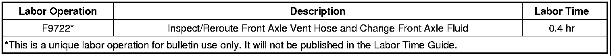

Drivetrain - Front Axle Vent Hose Mis-routed
INFORMATIONBulletin No.: 08-04-19-004B
Date: March 19, 2012
Subject: Correct Front Axle Vent Hose Routing
Models:
2007-2012 Cadillac Escalade, Escalade ESV, Escalade EXT
2007-2012 Chevrolet Avalanche, Silverado, Suburban, Tahoe
2007-2012 GMC Sierra, Yukon, Yukon XL
with Four Wheel Drive or All Wheel Drive
Supercede:
This bulletin is being revised to add the 2011 and 2012 model year and update Parts Information. Please discard Corporate Bulletin Number 08-04-19-004A (Section 04 - Driveline/Axle).
The front axle vent hose is mounted in the left side of the engine compartment, and may not be correctly routed. The vent hose can get misrouted and placed in a position that is lower than the front axle harness/engine harness in-line connector. In this position, the vent tube may ingest water. The front axle vent hose may be routed to the wheel side of the wheel well. It may be hanging through the opening of the wheel well in a vertical position, with the vent cap hanging down.
If you encounter a vehicle with the front axle vent hose misrouted, reroute the hose to the correct location. The hose should be mounted inside the engine compartment, in an upward position to prevent the possibility of water being drawn into the hose and axle assembly during cool-down. Tape the vent hose to the nearby wiring harness as shown. Technicians should also change the front axle fluid.
Parts Information
Warranty Information

For vehicles repaired under warranty, use the table.

Disclaimer